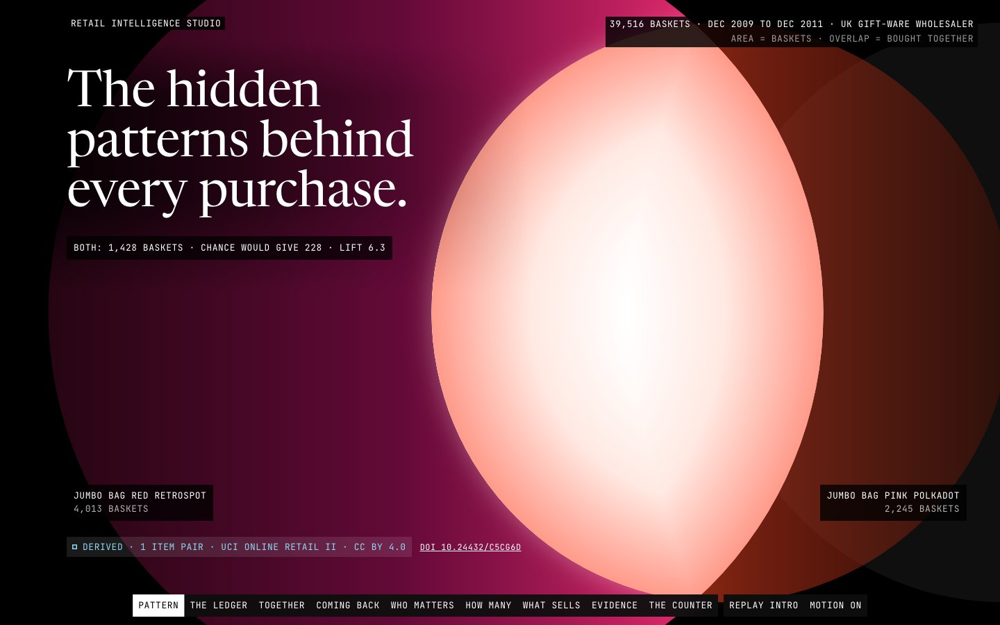

Data story · dbt star schema · Forecasting and CLV · 2026-10
The Hidden Patterns Behind Every Purchase
One UK gift-ware wholesaler's ledger of 1,067,371 invoice lines, drawn as pairs of discs of light whose overlap is exactly what two sets share: bought together, coming back, who matters, how many to stock, and what will sell.

Dataset: Online Retail II, Daqing Chen (2012), UCI Machine Learning Repository, doi:10.24432/C5CG6D, CC BY 4.0. Derived aggregates, modified; not the original file. Customers are anonymised integer keys and the source has no demographics. One UK gift-ware wholesaler over 24 months, mostly trade buyers: not representative of retail in general. The newsvendor is SIMULATED (costs are assumptions). Analytical examples only, not business advice.
01 — The problem
A retailer's ledger answers more than totals. Which two products are bought together more than chance allows, how many customers from a given month are still buying a year later, which few customers carry most of the revenue, how much of a product to stock, and what the next weeks will sell.
The questions: can every one of those be shown as the same picture of two groups and what they share, so the area on screen is the number, and can each prediction sit beside the test that could have shown it wrong?
02 — What I built
An offline data engine and a static site joined by a contract.
- Engine: a dbt-duckdb star schema over every invoice line with each dropped row counted and refunds matched to earlier sales; market-basket rules, RFM scores, monthly cohorts, a rolling-origin forecast backtest against seasonal-naive, BG/NBD plus Gamma-Gamma customer value tested on a holdout, and newsvendor scenarios.
- Site: one renderer. Two discs have areas equal to their set sizes and an overlap area solved exactly from what they share; the overlap is white light, the only bright thing on a frame. Chance is a 6% ghost, and the distance the partner is pulled from the ghost is lift.
- Every figure carries an honesty tag: OBSERVED, DERIVED, PREDICTED or SIMULATED.
03 — How it was built
- 01
Count every line before drawing anything
1,067,371 raw rows reduce to 1,033,036 kept: 22,523 sheet-overlap duplicates and 11,812 exact duplicates are removed and stated, and the totals reconcile to the penny. Refunds are their own set, matched last-in-first-out to earlier sales; some refund a sale from before the data begins.
- 02
Make the overlap exact
The centre distance of the two discs is found by bisection on the circle-circle lens area, to 1e-9 relative, so every drawn frame (including mid-pull) is an exact Euler pair of some sizes. For the hero pair, 4,013 baskets with one bag, 2,245 with another and 1,428 with both against 228 expected by chance: lift 6.3.
- 03
Read the rules for what they are
The highest-lift rules are variants of one product (three herb markers, 150 times chance), so they are flagged and shown once; the most common pairs are bags and cases bought for the same occasion. The site says association is not causation.
- 04
Test every prediction on data it never saw
The best forecast has a pooled WAPE of 29.3% against 45.2% for seasonal-naive (35% skill) and beats it on 94.5% of series, yet its 80% interval covered 72% of backtest cases, and that is printed. The CLV model's predicted repeats landed within 1.4% of the 26-week holdout's total, with a decile MAPE of 9.0%.
- 05
Say what cannot be said
Price elasticity is not estimable from this ledger: price varies by buyer and order size, not over time, and the criteria table shows which checks failed and what data would be needed. The newsvendor's policy check beat ordering the mean by only 0.006% over 26 weeks, which is what an honest result looks like.
04 — Results
Data. 39,516 baskets, 5,942 known customers in 43 countries, 4,458 association rules (1,433 across product families). The median cohort keeps 17.2% of its customers a year later; the loyal core (Champions) is 21.3% of customers and 68.6% of revenue.
Verified. The Euler solver reproduces its target overlap to 1e-9 and the design fixture exactly; all 71 newsvendor parity vectors reproduce to 1e-6; an end-to-end test asserts that the area drawn equals the number shown in every scene state.
Measured on the live site. Lighthouse x3 against the public URL: mobile performance 0.99 to 1.00, LCP 1.36 to 1.55 s, CLS under 0.001, accessibility 1.00; desktop performance 0.99 to 1.00, LCP 0.31 to 0.33 s. At 1440 and 390 wide: 17 requests, 0 failed, 0 console errors, 0 external hosts. Tests: pytest 45, Vitest 78, Playwright 20 (whole-document collision walk and text floor at six sizes, pixel contrast, axe in motion and reduced motion).
Honest limits: the final visual review was a single-reviewer read of screenshots at 1440, 768 and 390, not a fresh independent QA pass, and the data is one wholesaler, not retail in general.
05 — What I'd do next
- Add dated list-price history so price response could be estimated honestly.
- Replace the 4-week mean with a model that handles the two Christmas peaks, now that the backtest shows the seasonal-naive only has one prior year to copy.
- Calibrate the forecast interval, which under-covers (72% against a nominal 80%).